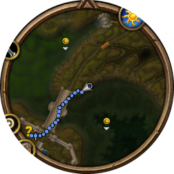

Questify
Built-in guidance
An arrow on screen with the distance and the time to the next step, and the path drawn on the minimap and the world map.
Questify plans the trip on foot around walls and cliffs, and adds flights, boats and your hearthstone when they are faster. No other addon needed.
293 yd
about 40 s
Walk to Wetlands

Path on the minimap

And on the world map
The arrow
In-game capture
World of Warcraft: Forever